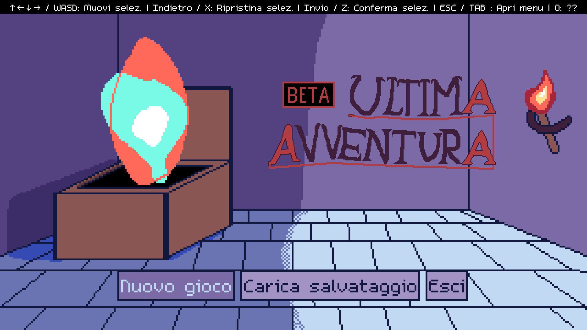
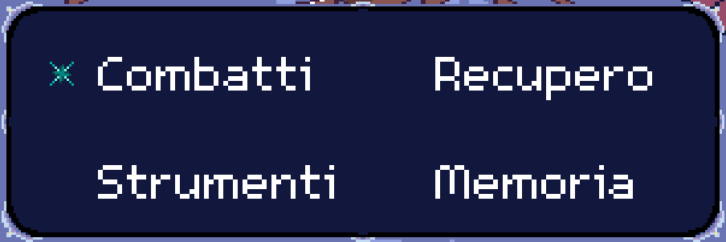

Project Work n.1 proposto da AddValue (2023/2024).
Visualizza Documentazione »
Scarica il gioco · Segnala un problema
Ultima avventura è un gioco rpg a turni il quale obiettivo è quello di sopravvivere per più round affrontando diversi tipi di boss. I punti vita e il mana dei personaggi non aumenteranno a fine di ogni combattimento.
Un gruppo di avventurieri in missione si ritrova in una apparente stanza del tesoro. Alla vista di un enorme tesoro, il giovane mago dai capelli viola del gruppo è intrepido ad aprirlo, ma non si accorge della trappola. Appena il baule viene aperto, tutti coloro che si ritrovano nella stanza vengono spediti in un’altra dimensione. Vengono portati nel nostro mondo, soltanto… enormemente ridimensionati. Ora sono alti quanto uno scoiattolo e devono trovare un modo di tornare indietro. Eventualmente non ce la faranno mai, in quanto il gioco andrà avanti all’infinito e saranno quindi costretti, prima o poi, a morire. Vivi la loro ultima avventura.
All’avvio, ci si ritroverà nella seguente schermata:

Avviando il gioco, queste saranno le opzioni possibili:

| Arata | Asphile | Kan |
|---|---|---|
| ||
| Mago promettente che conosce magie di offesa e di supporto. Sarà sempre nella mente del giocatore perché sarà l’anello vitale del gruppo che se cadrà potrebbe destinare l’intero gruppo al fallimento inesorabile. | Elfa guerriera con lo spirito di gruppo. Permette al giocatore di garantire al gruppo di rimanere al sicuro e di avere opportunità di attacco. Da sola non sarà in grado di fare molto. | Giovane stregone che permette di effettuare attacchi devastanti rendendo il pacing del gioco più rapido. La sua perdita porterà a rendere i singoli incontri lunghi e, lentamente, a portare uno svantaggio sempre più elevato. |
Nella voce releases sono contenuti tutti i file necessari per il download.
:warning: Consiglio prima di continuare di prestare attenzione all’audio del proprio dispositivo!
Scaricare il file ultima_avventura_win.zip da releases (o premere qui) ed estrarre il file.
Avviare ultima_avventura.exe
Scaricare il file ultima_avventura_linux.zip da releases (o premere qui) ed estrarre il file.
Rendere eseguibile ed eseguire il file ultima_avventura.x86_64:
:warning: Se il dispositivo non supporta Vulkan, seguire la procedura da terminale.
$ chmod 755 ultima_avventura.x86_64
$ ./ultima_avventura.x86_64$ ./ultima_avventura.x86_64In caso si registri un errore che contiene nel messaggio di errore:
$ ERROR: Could not initialize VulkanEseguire il file con questo comando:
$ ./ultima_avventura.x86_64 --rendering-driver opengl3Ultima Avventura non è ultimato, ma è stato tenuto in considerazione fin dagli albori del progetto di tenere il gioco altamente modificabile.
La sua natura FOSS permette di modificare il titolo pesantemente e molto più facilmente.
Verrà rilasciata una guida in futuro per “Come modificare Ultima Avventura”, in quanto il gioco è ancora in modalità BETA.
Grazie a Daniel Linssen per il font utilizzato: m5x7.
Grazie ad AddValue per l’occasione offerta.